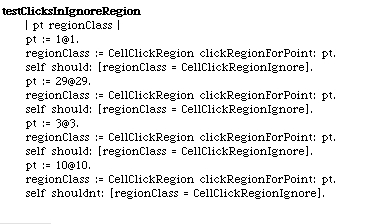
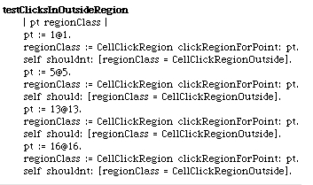
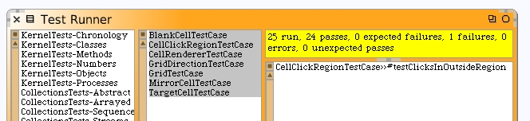
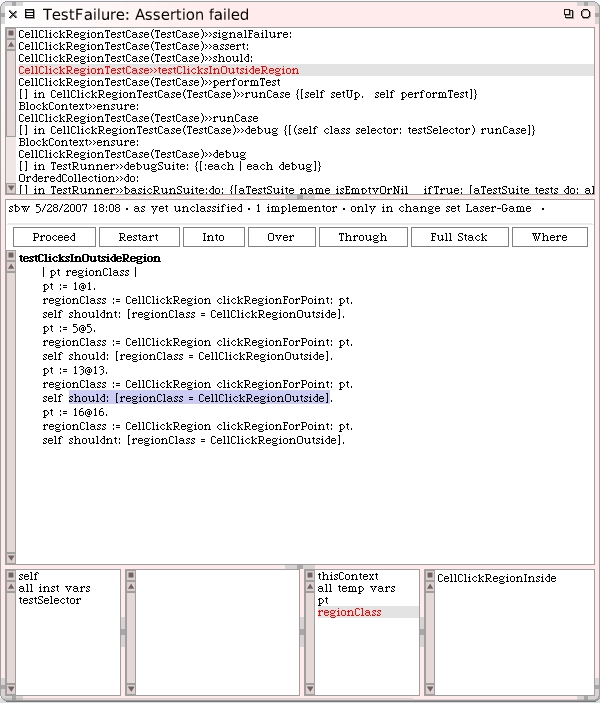
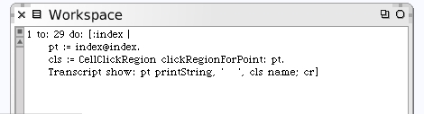
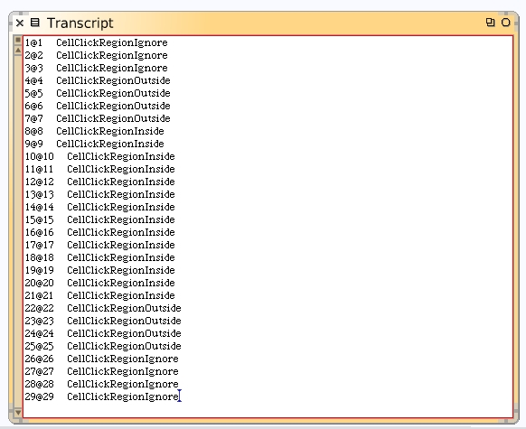
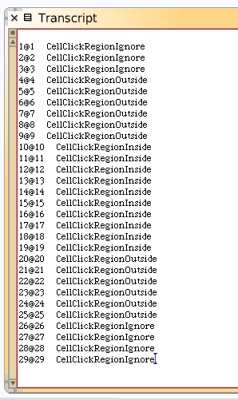
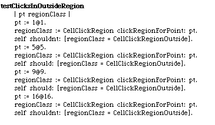
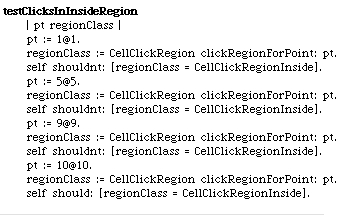

Back to the CellClickRegionTestCase class. Enhance the unit test to try a point that should not be within the ignore region.
When we run our unit tests, they still pass.
Write the unit test for the outside region.
We do get an error when we run this one.
The inside region claimed the point 13@13.
That doesn't seem correct, however the test right before this one checked the point 5@5 and that was found to be in the outside click region. Maybe our test case is wrong?
We could write a little workspace code piece that helps us to see exactly where the transition points are for the three click regions.
Open up the Transcript window from the World menu and then run the code in this workspace.

Earlier we had defined the extent of a cell to be 30@30 and the extent
of the inside click region to be 14@14.
That would make the distance from the outside of the cell until
we get to the inside region to be somewhere around:
(30 - 14) = 16
16 / 2 = 8
So actually, 8 pixels is correct. We may have made that inside extent too big. Let's tighten up the extent on the inside region. The method for #insideRegionExtent on the CellRenderer class should be changed.
Clear the contents of the Transcript and run that workspace code again.
Modify the unit test and rerun.
Everything passes.
Write the test for the inside region.
Everything still passes. We should proceed. We can resume coding with confidence because we believe we have written unit tests with sufficient coverage of our methods and because they all pass.